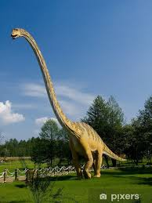
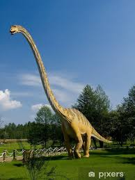

Diplodok, znany również jako Diplodocus, to jeden z najbardziej ikonicznych dinozaurów z okresu jury, żyjący około 154-152 miliony lat temu. Był to długi, potężny roślinożerca, który poruszał się na czterech nogach i posiadał długi, smukły ogon oraz długą szyję. Jego imponująca budowa sprawiała, że osiągał długość nawet do 30 metrów, czyniąc go jednym z najdłuższych lądowych zwierząt w historii Ziemi.
 Jedną z najbardziej charakterystycznych cech diplodoka była jego długa, giętka szyja, umożliwiająca mu dostęp do wysokich gałęzi drzew. Choć wielu naukowców początkowo sugerowało, że używał jej do pasania się na drzewach, obecnie bardziej powszechne są teorie, że przede wszystkim służyła mu do zrywania liści z koron drzew oraz do komunikacji w obrębie swojej grupy.

Dzięki dobrze zachowanym skamieniałościom, paleontolodzy mieli możliwość dokładnego zbadania budowy ciała diplodoka. Ich badania sugerują, że mimo swojej imponującej wielkości, był stosunkowo lekki jak na swoje gabaryty, co pozwalało mu poruszać się w miarę sprawnie. Diplodok jest jednym z najbardziej znanych i rozpoznawalnych dinozaurów, symbolizującym potęgę i majestat prehistorycznego świata.
Jedną z najbardziej charakterystycznych cech diplodoka była jego długa, giętka szyja, umożliwiająca mu dostęp do wysokich gałęzi drzew. Choć wielu naukowców początkowo sugerowało, że używał jej do pasania się na drzewach, obecnie bardziej powszechne są teorie, że przede wszystkim służyła mu do zrywania liści z koron drzew oraz do komunikacji w obrębie swojej grupy.

Dzięki dobrze zachowanym skamieniałościom, paleontolodzy mieli możliwość dokładnego zbadania budowy ciała diplodoka. Ich badania sugerują, że mimo swojej imponującej wielkości, był stosunkowo lekki jak na swoje gabaryty, co pozwalało mu poruszać się w miarę sprawnie. Diplodok jest jednym z najbardziej znanych i rozpoznawalnych dinozaurów, symbolizującym potęgę i majestat prehistorycznego świata.

Adres: Zwoleń Radosna 26-700
Kontakt: nr. 797 715 111
email: jurrasicpark@gmail.com
Godziny otwarcia